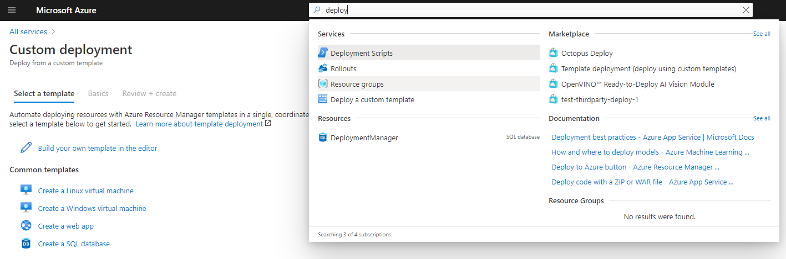
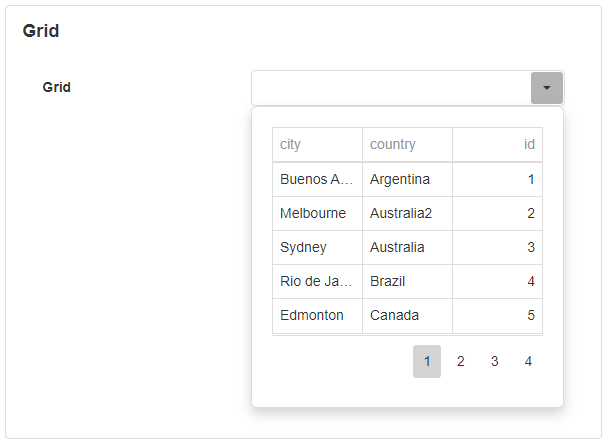

Tree List
The Tree List UI component is a tree-like representation of textual data. This component is useful when we want to display something that has a hierarchy.
Note
Some images in this document may be missing and need to be migrated from the original GitBook documentation.

Tree List Properties
Appearance
Common Properties
Properties that are common to most Blocks include visible and tooltip.
See the Common Properties article for more details on common appearance properties.
Behavior
Common Properties
The disabled property is common to most Blocks;
See the Common Properties article for more details on common behavior properties.
Search Enabled
A search bar will be shown on top of the list and the user can search the data.
Value
Common Properties
The value property is common to most Blocks;
See the Common Properties article for more details on common value properties.
When an Id is entered into the value field, it detects it automatically.

Data Source
Common Properties
Properties that are common to most Blocks include: filter, sort, show # of results, and skip # of results;
See the Common Properties article for more details on common Data Source properties.
The Data Source property is required for the Tree List.
Data
Display
The Display property is required for the Tree List.
Id
The Id property is required for the Tree List.
Parent Id
Properties include the Parent Id so the component knows how the fields are connected to each other. The Parent Id refers to the Id of the parent record. For example, in the hierarchy of employees, multiple people could report to one manager, so their parent Ids would be the Id of the person they are listed underneath. If the parent Id of a record is set to null or 0, it will automatically be placed as a root or main parent element on the tree.
See the Common Properties article for more details on common data properties.
The Parent Id property is required for the Tree List.
Action
Common Properties
Properties that are common to most Blocks include: Navigate To and Show Confirmation Dialog;
See the Common Properties article for more details on common action properties.
Last modified: May 29, 2025